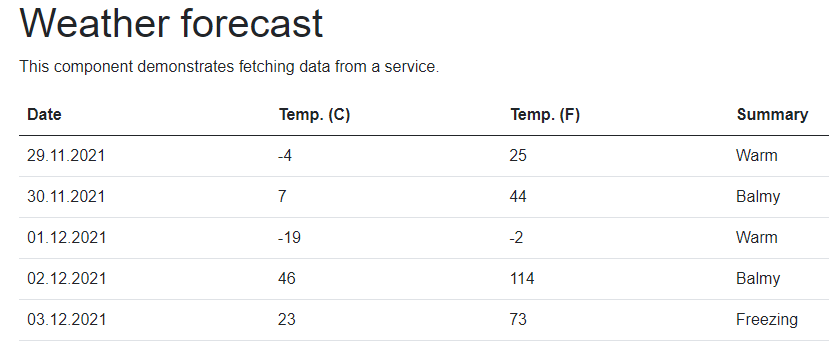

In the first part I created a sample Blazor app, installed Playwright and created first test. This post is to get more comfortable with Playwright.
Getting more familiar
Just to recall the test I wrote (validation of the element on a /counter web page):
using Microsoft.Playwright.NUnit;
using System.Threading.Tasks;
namespace BlazorApp.Tests;
class MainPageTests : PageTest
{
public async Task CounterStartsWithZero()
{
// call to the `/counter` page
await Page.GotoAsync("http://localhost:5165/counter");
// search for the counter value
var content = await Page.TextContentAsync("p");
// assertion for the value
Assert.Equals("Current count: 0", content);
}
}
Writing subsequent tests is like copy/paste/edit - go to the page, do something, verify if it returns what you expected. As an example - check if I’m redirected to the /counter page when I click the link on the main page looks like the following:
[Test]
public async Task ClickingCounterRedirectsToCounterPage()
{
// call to the main page
await Page.GotoAsync("http://localhost:5165/");
// search for the counter link and click it
await Page.ClickAsync("text=Counter");
// verify redirection
Assert.AreEqual("xxx", Page.Url);
}
Page.ClickAsync() is a void method, so to check whether I was redirected, I check the Page.Url property, as it is updated in the navigation lifecycle. As previously - the first test execution should fail (and also helps to verify what is returned). And it fails:
Expected string length 3 but was 29. Strings differ at index 0.
Expected: "xxx"
But was: "http://localhost:5165/counter"
-----------^
Page.Url returns the whole URL (I expected that) as a string. I could compare the absolute URLs, but I don’t want to. I will use System.Uri to get only a relative part:
[Test]
public async Task ClickingCounterRedirectsToCounterPage()
{
// call to the main page
await Page.GotoAsync("http://localhost:5165/");
// search for the counter link and click it
await Page.ClickAsync("text=Counter");
// verify redirection
System.Uri pageUri = new System.Uri(Page.Url);
Assert.AreEqual("/counter", pageUri.PathAndQuery);
}
OK, I get more or less how it works, and I can dig into the documentation to find out more commands I can use for testing. As an example I can verify other web page’s parameters or states (Page.Title, Page.ContentAsync(), Page.IsCheckedAsync()) and test any selector. When I think about a thing I would like to check or test - it’s all there. So it boils down to searching a method in the API documentation and using it. Simple. If you want to see more tests - check the repository.
So I’m going to verify something less obvious. The Weather forecast page has a table, and I will prepare some tests to validate it.

I want to test four things about the table:
- Does it have five rows with data?
- Is the header’s font 16px in size?
- Is the header’s font bold?
- Are the dates in ascending order?
Enter the Eval world
To check the information about the given page element I can for example use EvalOnSelectorAsync() / EvalOnSelectorAllAsync() methods. The difference is that the former returns one element (first found in DOM, when there are multiple matches available) or all elements that match the selector. Both functions take at minimum two arguments: selector and expression, and the type it returns: Page.EvalOnSelectorAsync<type>(selector, expression).
I can also use a Locator() method. It returns a Locator instance instead of ElementHandle as other selector methods (like ClickAsync(), or QuerySelectorAsync()). Locator is more strict, and forces you to return only one element (except for the CountAsync() method, which can handle multiple results). Also, Locator captures how to get to the element, and ElementHandle holds the handle to the element itself.
As an example - to find the numbers of rows in the table on the /fetchdata page, I can write it in a few ways:
-
find a table and get the row count (including header - returns 6):
int tableRows = await Page.EvalOnSelectorAsync<int>("//table", "tbl => tbl.rows.length"); -
find a table’s
tbodyelement and get the row count (only data rows - all methods return 5)int tableRows = await Page.EvalOnSelectorAsync<int>("//table/tbody", "tbody => tbody.childNodes.length"); // or int tableRows = await Page.EvalOnSelectorAsync<int>("//table/tbody", "tbody => tbody.childElementCount"); // or int tableRows = await Page.EvalOnSelectorAsync<int>("//table/tbody", "tbody => tbody.rows.length"); // or int tableRows = await Page.EvalOnSelectorAllAsync<int>("//table/tbody/tr", "rows => rows.length"); // or int tableRows = await Page.Locator("//table/tbody/tr").CountAsync();
A short explanation of the code above: each command looks for element(s) that match the selectors (I used XPath selectors //table and //table/body). After the selector is matched, Playwright uses the found element(s) in the expression. The syntax used above utilises lambda expressions, meaning “hey, I have something, and I will refer to that something as the thing you see on the left side of the expression, and on the right, side I will show you what to do with it”. To look a bit closer, I will take Page.EvalOnSelectorAsync<int>("//table/tbody", "el => el.rows.length") as an example:
Page.EvalOnSelectorAsync<int>("//table/tbody", "el => el.rows.length")
// selector: "//table/tbody"
// expression: "el => el.rows.length"
The expression means:
- the selector found some object, I will call it
el: “el=> …” - take this element
eland get me itsrows.lengthproperty: “… =>el.rows.length”
To find the dates, I use Locator and InnerTextAsync() to show the syntax. The XPath expressions find the rows, and DateTime operations set the formatted dates as the expected values. Not beautiful, but it works.
[Test]
public async Task TableDatesStartTomorrowAscending()
{
// call to the `/fetchdata` page
await Page.GotoAsync("http://localhost:5165/fetchdata");
// get number of table rows
string date1 = await Page.Locator("//table/tbody/tr[1]/td[1]").InnerTextAsync();
string date2 = await Page.Locator("//table/tbody/tr[2]/td[1]").InnerTextAsync();
string date3 = await Page.Locator("//table/tbody/tr[3]/td[1]").InnerTextAsync();
string date4 = await Page.Locator("//table/tbody/tr[4]/td[1]").InnerTextAsync();
string date5 = await Page.Locator("//table/tbody/tr[5]/td[1]").InnerTextAsync();
// assertion for the value
Assert.AreEqual(DateTime.Now.AddDays(1).ToString("dd.MM.yyyy"), date1);
Assert.AreEqual(DateTime.Now.AddDays(2).ToString("dd.MM.yyyy"), date2);
Assert.AreEqual(DateTime.Now.AddDays(3).ToString("dd.MM.yyyy"), date3);
Assert.AreEqual(DateTime.Now.AddDays(4).ToString("dd.MM.yyyy"), date4);
Assert.AreEqual(DateTime.Now.AddDays(5).ToString("dd.MM.yyyy"), date5);
}
The last example is a test whether the header’s font is 16px. For this I modified an example from the official documentation and used window.getComputedStyle(cell).fontSize expression:
[Test]
public async Task TableHeaderHas16pxFont()
{
// call to the `/fetchdata` page
await Page.GotoAsync(this.pageUrl);
// get number of table rows
string fontSize = await Page.EvalOnSelectorAsync<string>("//table/thead/tr/th", "cell => window.getComputedStyle(cell).fontSize");
// assertion for the value
Assert.AreEqual("16px", fontSize);
}
Not sure why, but sometimes the tests using window.getComputedStyle() failed when run for the first time. Rerunning them made the tests pass, but it looks unstable and is something to investigate later.
A bit more about expressions
I can tell which element I want to find, and I can use a few engines (text=... for searching by text, / or XPath= for XPath, css=... for CSS). I know I need to use lambda expressions for the expression part. But how can I check what I can test using the expression? How do I get these rows.length, childElementCount, or window.getComputedStyle(cell).fontSize?
The first option is to use the developer tools in the browser. I click the right mouse button on a given element and select Inspect. I confirm whether the console shows the correct part and then switch to the Properties tab.

Above, you see the console from the Brave browser. It shows the path to the <tbody> element, and I can see that the rows HTMLCollection has the length property.
The Firefox browser also helps to find the elements using the Search option in the Inspector. Below you see the XPath expression for the <tr> elements in the <tbody>. It also shows 5 found occurrences.

Note: you can also search within the Brave’s (and Edge’s/Chrome’s) tools by pressing Ctrl + F in the Elements tab
The second option is to go to the official MDN documentation (or other web API documentation of your choice). I use MDN for:
Setting the URL once
I’m sure you have noticed that I repeat the URL in every test. I don’t like it either, and it’s now the time to clean it up a bit. I create an additional Init() method for each test class and decorate it with the [Setup] attribute, so it will be called before each test. Inside, I set the pageUrl property, which is then used in the Page.GotoAsync() method:
private string pageUrl = "";
[SetUp]
public void Init()
{
pageUrl = "http://localhost:5165";
}
[Test]
public async Task PageTitleIsIndex()
{
// call to the `/counter` page
await Page.GotoAsync(this.pageUrl);
// get page title
string title = await Page.TitleAsync();
// assertion for the value
Assert.AreEqual("Index", title);
}
For now, I will leave like that. I don’t like the website’s hardcoded address and will fix it in the next part using external configuration.
Sidenotes on the header screenshot:
- I see the
Run Test | Debug Testelements in VSCode only when I open the BlazorApp.Tests folder directly; it does not show when I open the parent folder or add the folder in the workspace (maybe some configuration is invalid/missing?); they show because I have C# VSCode extension from Microsoft installed - I use .NET Core Test Explorer VSCode extension by Jun Han (more about it in the next part)
- I use Error Lens VSCode extension by Alexander
Short summary
- Playwright has a very clean API, and it gets swift to start using it
LocatorAPI looks more intuitive than API returning ElementHandle; I have to investigate and use a bit more- When using
window.getComputedStyle(cell)in theEvaluateAsyncorEvalOnSelectorAsyncI sometimes got errors (like:test returned <String.Empty>); after running the tests again they passed